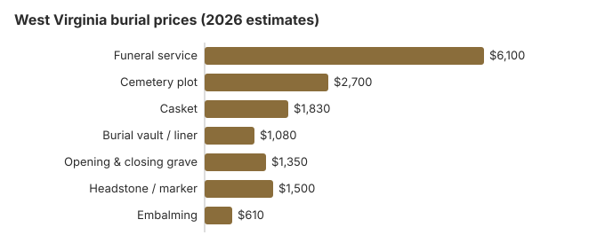

Burial Costs in West Virginia (2026)
Burying someone in West Virginia costs $13,560 to $18,060 by our estimate, and the paperwork has a name of its own here: the authorization for final disposition, which the cemetery must see before any burial. Church and family cemeteries are still common in the state, and they are often the biggest saving. This page walks through each charge, that form, and the help West Virginia offers when money is short.
Pricing a Burial in West Virginia
| Cost | West Virginia estimate | From – to |
|---|---|---|
| Funeral service | $6,100 | $4,575 – $7,930 |
| Cemetery plot | $2,700 | $1,350 – $5,400 |
| Casket | $1,830 | $610 – $4,880 |
| Burial vault / liner | $1,080 | $800 – $10,000 |
| Opening & closing grave | $1,350 | $500 – $3,000 |
| Headstone / marker | $1,500 | $500 – $5,000+ |
| Embalming | $610 | $500 – $1,500 |
Reading these figures: they are modelled West Virginia estimates, not prices we surveyed, and no funeral home or cemetery has quoted them. See our method for how they are built, and our disclaimer.

Once the cemetery's fees are added to the funeral home's, a West Virginia burial runs from $13,560 to $18,060 in our model, with the casket and the cemetery making up most of the difference.
Burial Choices in West Virginia
Cutting the Cost of a West Virginia Burial
Where a West Virginia family can usually save:
- Get prices line by line. West Virginia funeral homes must hand over a General Price List. Cemeteries are not obliged to, but most will give an itemized sheet if you ask for one instead of a package price.
- Ask about a church or family cemetery. Rural West Virginia still has many working ones, where a plot can be priced 30 to 50% under a commercial memorial park.
- Look for a veterans' section. A number of West Virginia counties set aside sections for veterans in local cemeteries, apart from the national cemetery.
- Price a mausoleum too. In some cemeteries a crypt can cost less than a plot plus a vault, so ask for both prices before deciding.
Church and Family Cemeteries in West Virginia
Family and church cemeteries still sit beside commercial ones across much of West Virginia, and many congregations price their sections below the market. A family that already has a church or family plot may save more than $1,080 against a private cemetery, by our estimate.
Burial Resources
- Funeral Consumers AllianceNonprofit consumer advocacy for funeral pricing
- Headstone & Monument GuideCosts, types, and buying tips
- Green Burial OptionsEco-friendly and natural alternatives
- Best Online Casket RetailersCaskets bought online often cost less
- Best Burial InsuranceCompare plans to cover burial expenses
Compare Funeral Costs
- Average Funeral Cost in 2026National cost breakdown with real prices
- Cremation vs. Burial Cost ComparisonSide-by-side price comparison to help you decide
- Funeral Cost BreakdownEvery line item explained: know what you're paying for
- Cheapest Funeral OptionsLower-cost alternatives, with typical price ranges
- Direct Cremation: Most Affordable OptionNFDA 2023 median $2,645 with a family-supplied container (latest available)
- How to Compare Funeral PricesStep-by-step guide to getting the best price
A casket or headstone does not have to come from the funeral home. See what they usually cost in our online casket retailer guide and headstone cost guide, and look through the payment assistance guide for help a West Virginia family might qualify for.
Frequently Asked Questions
What does a West Virginia burial cost?
Expect about $6,100 for the funeral service and $2,700 for a cemetery plot in West Virginia. With a burial vault ($1,080), opening and closing ($1,350), a casket ($1,830) and a headstone ($500-$5,000), the full burial comes to $13,560 to $18,060. Part of a plot price funds upkeep: W. Va. Code §35-5A-4 requires a perpetual care cemetery to deposit $10 or ten percent of each burial lot sale, whichever is greater, into a permanent endowment care fund.
Does a West Virginia cemetery require a vault?
State law does not require one, but nearly every West Virginia cemetery does by its own policy. A grave liner is usually accepted instead, so ask the cemetery for its rule in writing.
How can a West Virginia burial cost less?
The biggest savings come from three choices: direct burial, with no viewing, service or embalming; a green burial where a West Virginia cemetery offers one, with a biodegradable container, no embalming and often a lower plot fee; and buying the casket from an online or independent seller instead of the funeral home.
What should I compare between West Virginia cemeteries?
Get each cemetery's prices in writing for the grave, its opening and closing, the vault and the marker, and ask whether money paid in advance is held in trust. West Virginia cemetery companies register every year with the State Tax Commissioner, and when goods or services sold ahead will be delivered more than 120 days later, 40% of the contract price must go into a trust fund.
Funeral homes have their own licensing body, the West Virginia Board of Funeral Service Examiners (304-558-0302).
What is the full West Virginia burial total?
All together, a West Virginia burial comes to $13,560 to $18,060: about $6,100 for the funeral service, $2,700 for the plot, $1,830 for the casket, $1,080 for the vault and $1,350 to open and close the grave, plus $500 to $5,000 for a headstone.
Is green burial possible in West Virginia?
Yes, at some cemeteries. A green burial section allows a biodegradable container with no embalming and no vault, and usually costs less than a conventional burial. If no green burial ground is close, a regular plot without embalming is a middle path some West Virginia families take.
More for West Virginia
West Virginia's authorization for final disposition
In West Virginia the paperwork for a burial is called an authorization for final disposition. The funeral director or other person with custody gets it before the burial, from the physician or a state or county medical examiner, on the state registrar's form (W. Va. Code § 16-5-23; checked October 29, 2026).
- At the grave: no sexton may allow a burial without the authorization, and the cemetery returns it, dated, to the funeral director within ten days.
- Family plots: where nobody is in charge of the burial place, as on many family land plots, the funeral director or family writes "No person in charge" across the form.
- Monthly filing: by the 10th of each month, the funeral director sends all the month's authorizations to the state registrar.
West Virginia burial oversight and help
The West Virginia Board of Funeral Service Examiners licenses funeral homes and handles license checks and complaints at 304-558-0302. Cemeteries in the state can fall under a separate regulator, such as the State Tax Commissioner for cemetery company registration.
The Funeral Consumers Alliance leaves West Virginia off its nine-state list of places where a funeral director is mandatory. Relatives may settle the grave, its opening and the accepted container directly with the cemetery, as long as the authorization for final disposition is in place. If plans change to cremation, there is no fixed waiting period, but a permit is required (W. Va. Code 30-6-21).
Indigent burial
West Virginia's Indigent Burial program pays a $1,000 rate. If relatives agree to pay the full $2,200 maximum allowable amount, the application is denied; a smaller contribution above the $1,200 exemption is deducted from the $1,000 (W. Va. Code § 9-5-18). (Source: W. Va. Code § 9-5-18; WV Funeral Home Director Handbook (Indigent Burial).) The $255 Social Security payment to a surviving spouse or child would not cover even the $2,700 plot we estimate here.
An eligible veteran gets a grave, its opening and closing, a liner and a headstone free in a national cemetery. West Virginia has West Virginia National Cemetery (304-265-2044) and the state's Donel C. Kinnard Memorial State Veterans Cemetery (304-746-0026) (source: VA National Cemetery Administration).
Before you commit in West Virginia
- Compare two cemeteries and two funeral homes; the grave, opening and marker are priced apart from the funeral.
- Ask whether the cemetery accepts a headstone bought from a monument dealer.
- Before relatives chip in, ask DoHS how the $1,200 exemption and the $2,200 limit will be applied.
- For a veteran, check eligibility with West Virginia National Cemetery before buying a private plot.
- If a funeral home misleads you about prices, call the Board at 304-558-0302.